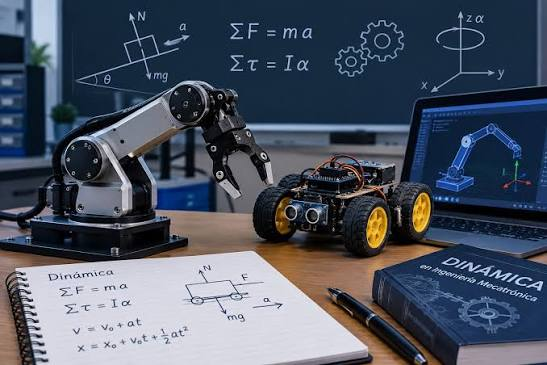

Cinemática y dinámica de robots

Cinemática estudia movimiento, omite fuerzas, omite masas, analiza geometría espacial. Cinemática Directa calcula posición efector final. Entrada: ángulos articulaciones. Cinemática Inversa calcula ángulos articulaciones. Entrada: posición deseada efector. Matrices Transformación Homogénea describen rotación, describen traslación, relacionan sistemas coordenados. Parámetros Denavit Hartenberg estandarizan localización eslabones, definen cuatro parámetros geométricos por articulación. Matriz Jacobiana mapea velocidades articulares, determina velocidad lineal efector, determina velocidad angular efector, identifica singularidades matemáticas. Dinámica relaciona movimiento, incluye fuerzas, incluye torques, incluye masas, incluye inercias. Dinámica Directa calcula aceleraciones articulares. Entrada: torques aplicados. Dinámica Inversa calcula torques requeridos.